Délimitations géographiques, politiques et écologiques : ce que couvre vraiment ce mot
→
02
Déconstruire les mythes
Pourquoi « l'Amazonie n'existe pas » au sens strict, et ce que ça change pour votre mission
→
03
Comprendre la révolution scientifique
Les découvertes récentes qui bouleversent notre vision d'une forêt « vierge »
→
04
Saisir les 4 éléments de Rostain
Eau · Terre · Feu · Air : le cadre d'analyse de Stephen Rostain pour lire le territoire
→
01
Partie 01 · Situer l'Amazonie
L'Amazonie, c'est quoi ?
Délimitations · Mythes · Réalités scientifiques
01 · Situer l'Amazonie
Délimitation géographique
Bassin versant amazonien
L'ensemble des terres dont les eaux se déversent dans le fleuve Amazone env. 7,7 millions de km²
Forêt tropicale amazonienne
La couverture forestière, qui déborde du bassin et s'étend sur 9 pays env. 5,5 millions de km²
Définitions officielles
9 pays la revendiquent, chacun avec ses propres frontières administratives, aucune définition ne fait consensus
« Even getting basic numbers is not as easy as you might think: numbers conflict in confusing ways because of slight differences in the way people define ecosystems. »
9
pays
partagent l'Amazonie
7,7 M
km²
de bassin versant
~60 %
de la forêt
tropicale mondiale
01 · Situer l'Amazonie
Se représenter l'échelle
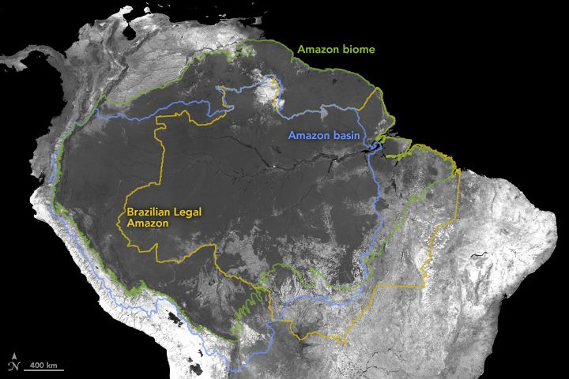
× 2l'Europe (hors Russie)
≈l'Australie
7,7
Bassin versant
millions de km²
5,5
Forêt amazonienne
millions de km²
5
Limite légale brésilienne
millions de km²
La « limite administrative » de 5 M km² renvoie à l'Amazônia Legal : zone définie par le droit brésilien (1966, révisée 2012), plus étroite que le bassin ou la forêt car elle exclut notamment l'Amazônia boliviana et colombienne.
Aucun pont ni barrage ne traverse le fleuve · Découverte de la source en 2014
01 · Situer l'Amazonie
Biodiversité : quelques chiffres
1/5
des espèces terrestres de la planète
40 000+
espèces de plantes recensées
1 300+
espèces d'oiseaux
3 000+
espèces de poissons d'eau douce
430+
espèces de mammifères
2,5 M
espèces d'insectes estimées
30+ millionsd'habitants, dont des centaines de peuples autochtones et plusieurs dizaines de tribus isolées sans contact
01 · Situer l'Amazonie
9 pays, une seule forêt
Question
Quels sont les pays de l'Amazonie ?
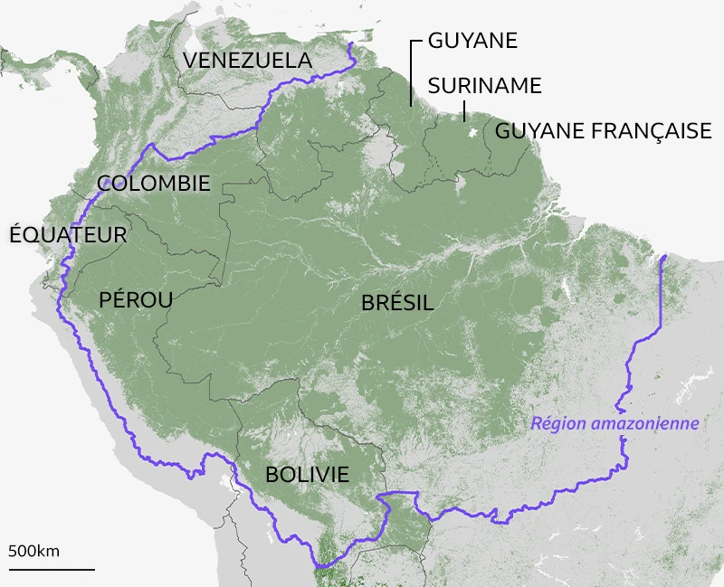
PART DE LA FORÊT AMAZONIENNE TOTALE
Brésil
59 %
Pérou ★
13 %
Bolivie
8 %
Colombie
7 %
Venezuela
6 %
Équateur
2 %
Suriname
2 %
Guyane fr.
1 %
Guyana
1 %
% DU TERRITOIRE NATIONAL COUVERT
Guyane fr.97 %
Suriname94 %
Guyana87 %
Bolivie66 %
Pérou ★60 %
Brésil49 %
Équateur48 %
01 · Situer l'Amazonie
Un climat hétérogène
Cliquez sur une vignette pour afficher la carte en grand
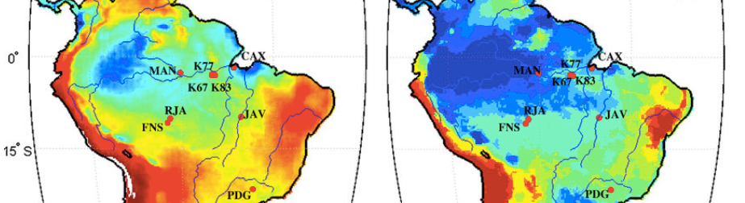
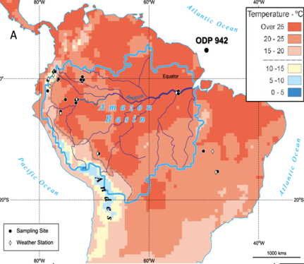
01 · Situer l'Amazonie
L'Amazonie, régulateur climatique mondial
Les rivières volantes
Un transport à l'échelle du continent
Par évapotranspiration, la canopée amazonienne libère d'immenses volumes de vapeur d'eau. Advectée par les vents dominants, cette humidité forme des courants atmosphériques, les « rivières volantes », qui acheminent l'eau sur plusieurs milliers de kilomètres, jusqu'au Brésil, en Bolivie et en Argentine.
≈ 50 %
des précipitations reçues loin de l'Amazonie proviennent de cette eau recyclée par la forêt.
Une usine à pluie
Un débit quotidien colossal
Ce cycle dépasse le simple transport : c'est un flux hydrologique massif. Chaque jour, la forêt restitue à l'atmosphère un volume d'eau comparable au débit du fleuve Amazone lui-même. Ce régime intense régule la saisonnalité des pluies régionales, sécurise l'agriculture et alimente la production hydroélectrique sud-américaine.
≈ 20 milliards
de tonnes d'eau libérées chaque jour dans l'atmosphère, l'équivalent du débit de l'Amazone.
Un puits de carbone géant
Puits ou source ? Un statut qui bascule
Une forêt intacte fixe par photosynthèse plus de CO₂ qu'elle n'en émet, le stockant dans le bois, les racines et les sols. Mais ce statut de puits n'est plus uniforme : des mesures montrent que l'est et le sud-est du bassin, dégradés par déforestation et incendies, émettent désormais plus de carbone qu'ils n'en absorbent.
≈ 150 Gt
de carbone stockées dans la biomasse amazonienne, un stock net menacé par la déforestation.
Un rempart contre les sécheresses
Un équilibre fragile
Le recyclage continu de l'humidité par la canopée module l'intensité des sécheresses régionales. Au-delà d'un certain seuil de déforestation, ce mécanisme s'affaiblit : les précipitations chutent, les incendies se multiplient, et certaines zones basculent vers un état de savane dégradée et plus sèche.
20–25 %
de déforestation pourraient conduire à un point de bascule écologique.
L'Amazonie fabrique son propre climat
La théorie du puits biotique
La forêt ne subit pas la pluie, elle la génère : en condensant la vapeur d'eau qu'elle transpire, elle abaisse la pression atmosphérique et aspire l'air océanique, entretenant son propre cycle pluviométrique. Une étude a directement associé les feux amazoniens à l'intensité des ouragans atlantiques.
+15 %
d'ouragans supplémentaires touchant le sud-est des États-Unis si 40 % de l'Amazonie disparaissait (projection).
Une influence planétaire
Des modèles aux implications mondiales
Les modèles de circulation générale montrent que la déforestation amazonienne n'a pas qu'un effet local : par téléconnexion atmosphérique, elle modifierait les régimes de précipitations jusqu'en Amérique du Nord et en Asie. Ces projections, encore débattues entre équipes de modélisation, situent l'enjeu à l'échelle planétaire.
≈ 6 millions km²
de forêt pèsent sur la circulation atmosphérique de la planète entière.
Le Rio Hamza
Le saviez-vous ?
À près de 4 km sous le fleuve Amazone, des géophysiciens brésiliens ont détecté un lent écoulement d'eau souterraine baptisé « Rio Hamza ». Sans être un fleuve navigable ni une réserve d'eau potable avérée, cette découverte révèle l'ampleur des circulations hydriques profondes du bassin amazonien.
≈ 4 000 m
de profondeur sous le fleuve Amazone.
Un fleuve d'eau douce jusqu'aux Caraïbes
Le pouls hydrologique de la planète
L'Amazone déverse dans l'Atlantique environ 200 000 m³ d'eau douce par seconde, soit près d'un cinquième du transport fluvial mondial vers les océans. Son panache, détectable par satellite, s'étend sur des milliers de kilomètres jusqu'à la mer des Caraïbes. En 2016, des chercheurs y ont identifié un système récifal de 9 500 km².
≈ 20 %
du transport mondial d'eau douce vers les océans provient du seul fleuve Amazone.
01 · Situer l'Amazonie
Réserve Nationale de Pacaya, Loreto
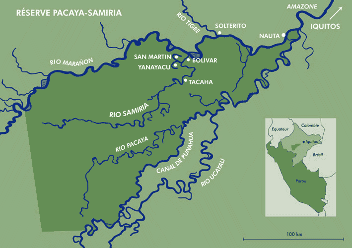
20 800 km²
La plus grande réserve nationale du Pérou, 2ᵉ en Amazonie
Confluent
Entre les fleuves Ucayali et Marañón, qui forment ensemble l'Amazone
Forêt inondable
La várzea : écosystème unique qui se noie 6 à 8 mois par an
02
Partie 02 · Déconstruire les mythes
Déconstruire les mythes
« La forêt vierge d'Amazonie n'existe pas »
Stéphen Rostain, CNRS · 2021
02 · Déconstruire les mythes
Trois mythes à déconstruire
01 · MYTHE COLONIAL
La forêt vierge
« Intact depuis toujours »
L'Amazonie serait une forêt intacte, jamais touchée par l'homme. Ce mythe, né de l'arrogance coloniale, nie 12 000 ans d'occupation et de gestion humaine active du territoire.
02 · MYTHE SCIENTIFIQUE
Le paradis contrefait
« Sols trop pauvres »
Betty Meggers (1954) : les sols ferrallitiques amazoniens seraient une limite absolue au développement de civilisations. Toute société complexe était impossible.
03 · MYTHE COLONIAL
L'Eldorado
« La cité d'or »
Les conquistadors cherchaient El Dorado, une cité d'or fantastique. Ce fantasme a justifié l'exploration violente de l'Amazonie et la réduction en esclavage de ses habitants.
02 · Déconstruire les mythes
Mythe #1 : La forêt vierge intacte
Le mythe
« L'Amazonie est une forêt vierge, non touchée par l'homme »
Les Européens qui « découvrent » l'Amazonie au XVIᵉ s. la décrivent comme une nature sauvage, sans civilisation notable
La doctrine de la terra nullius (« terre de personne ») en découle : l'Amazonie serait vide, donc appropriable
Ce mythe justifie encore aujourd'hui l'agro-industrie et l'extraction minière dans des « espaces vides »
Il a légitimé l'esclavage, les déplacements forcés et la destruction des cultures indigènes
La réalité
12 000 ans d'occupation et de gestion humaine active
Terra preta
Sols artificiellement enrichis sur des milliers de sites, preuve d'une agriculture intensive et intentionnelle
Géoglyphes (Acre)
Formes géométriques de 100–300 m creusées dans la roche, organisation sociale colossale
Champs surélevés
Agriculture hydraulique dans les plaines inondables, nourrissant des millions d'habitants
Cités-jardins
Réseaux urbains reliés par des routes, révélés par le LiDAR sous la canopée
02 · Déconstruire les mythes
Pourquoi la forêt semblait « vierge »
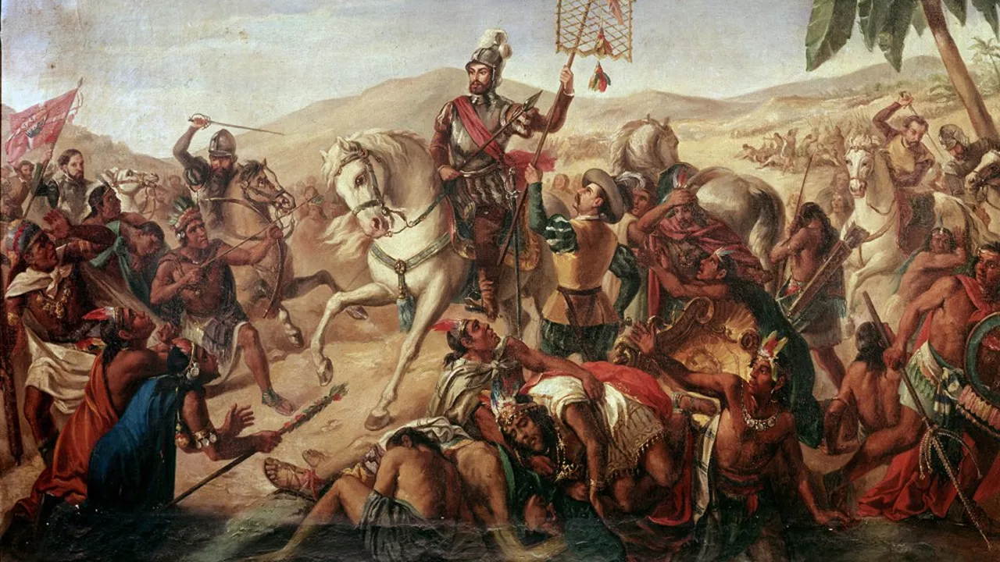
Hernán Cortés (1485–1547) : la conquête ouvre la voie aux épidémies qui déciment les populations amazoniennes
90 %des populations indigènes mouraient des maladies européennes
1 · XVIᵉ siècle
Orellana (1541) et Carvajal décrivent une Amazonie densément peuplée : villages et champs de maïs sur des centaines de km le long des fleuves. L'archéologie confirme ces récits : occupation dense, agriculture et pêche à grande échelle du bassin amazonien (Heckenberger et al., 2003 ; Rostain, 2021).
2 · Effondrement
Variole, rougeole, grippe et typhus : ~90 % des populations meurent en décennies (« virgin soil epidemics »). Sans immunité héréditaire, les sociétés s'effondrent ; champs surélevés, villages et réseaux de gestion abandonnés sur des millions d'hectares (Crosby, 1972 ; Denevan, 1992 ; Rostain, 2021).
3 · XVIIᵉ–XVIIIᵉ s.
La canopée reprend les terres cultivées. Au XVIIᵉ–XVIIIᵉ s., les explorateurs traversent une forêt en succession secondaire, marquée par la terra preta. Ils parlent de « forêt vierge », masquant 12 000 ans d'occupation humaine et des siècles de régénération (Rostain, 2021 ; McMichael et al., 2025).
02 · Déconstruire les mythes
Ce que révèlent le sol et le ciel
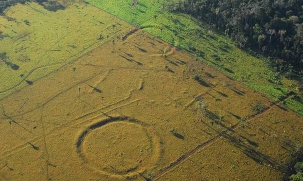
Géoglyphe visible depuis les airs après déforestation
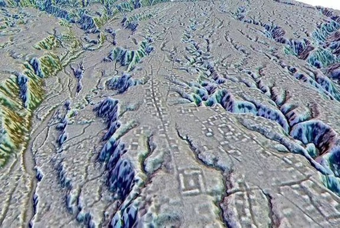
Relevé LiDAR : structures anciennes sous la canopée
Mythe #2Le paradis contrefait
MEGGERS100
ROUND 1
ROOSEVELT100
VS
Betty Meggers
1954 · Le paradis contrefait
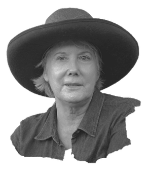
Anna Roosevelt
1980s · Le cœur rayonnant
Cliquez sur un gant pour lancer l'argument
Affirmation1954 : dans mon livre, je pose la loi du DÉTERMINISME ENVIRONNEMENTAL un sol pauvre en nutriments ne peut PAS soutenir de civilisation complexe. L'Amazonie n'est qu'un « paradis contrefait » !!
À Pedra Pintada, mes fouilles mettent au jour des poteries datées à 8 500 av. J.-C. parmi les plus anciennes du continent américain. Produites ici même, en pleine Amazonie.
AffirmationLes sols ferrallitiques sont ACIDES, pauvres, lessivés par les pluies AUCUNE agriculture intensive n'y est possible. Seules des bandes NOMADES ont pu y survivre.
Mes équipes documentent du maïs cultivé sur ces mêmes sols que vous jugiez « impossibles », associé à des villages sédentaires occupés durant des siècles.
AffirmationSeuls les sols volcaniques des ANDES permettent l'essor de civilisations avancées. L'intérieur amazonien reste un désert vert, incapable de nourrir des sociétés complexes.
Sur les rives du Xingu, des réseaux d'habitats reliés par des routes révèlent des populations denses. Et la terra preta un sol noir fabriqué par l'homme enrichit ces terres depuis des siècles.
AffirmationJ'ai posé ce cadre dès 1954 et il a dominé l'archéologie amazonienne pendant PRÈS DE QUARANTE ANS. Personne n'a sérieusement contesté mes conclusions.
Depuis les années 1990, fouilles, datations au radiocarbone et imagerie LiDAR convergent : le déterminisme environnemental ne tient plus. Les preuves s'accumulent, site après site.
Aujourd'hui, la science donne raison à Roosevelt.
MEGGERS KO
VICTOIRE ROOSEVELT
Le paradigme de Meggers est réfuté par l'archéologie
8 500 av. J.-C.
Poteries les plus anciennes des Amériques site de Pedra Pintada, Amazonie (Roosevelt, 1991)
Terra preta
Des milliers de sites à sols enrichis intentionnellement preuve d'occupation dense et prolongée (Glaser & al., Rostain 2021)
Maïs amazonien
Agriculture documentée dans des sols ferrallitiques que Meggers jugeait stériles (Roosevelt & al., 1996)
La terra preta (« terre noire » en portugais) est un sol artificiel créé par les peuples amazoniens depuis des millénaires. Sa découverte a définitivement réfuté l'idée que l'Amazonie ne pouvait abriter de grandes civilisations.
Composition
Charbon de bois (biochar), os broyés, fragments de poterie et déchets organiques intégrés intentionnellement sur des générations
Fertilité durable
Contrairement aux sols tropicaux qui s'épuisent vite, la terra preta reste fertile des siècles voire des millénaires
Étendue
Des milliers de sites sur tout le bassin. Certaines couches atteignent 2 m de profondeur, occupation prolongée et intense
Héritage vivant
Ces sols sont encore exploités aujourd'hui. Le biochar s'en inspire directement : une innovation amérindienne millénaire
02 · Déconstruire les mythes
Mythe #3 L'Eldorado
Le mythe
« El Dorado, la cité d'or légendaire au cœur de l'Amazonie »
Dès le XVIᵉ s., les conquistadors cherchent une cité fabuleuse couverte d'or, gouvernée par un roi qui se couvre de paillettes
Ce fantasme alimente des expéditions punitives, des massacres et la réduction en esclavage de populations autochtones
El Dorado sert de prétexte coloniale : l'Amazonie devient un territoire à conquérir, exploiter et christianiser
Le mythe persiste dans l'imaginaire occidental : jungle mystérieuse, trésors cachés, « terre à découvrir »
La réalité
Pas de cité d'or mais des sociétés amazoniennes complexes
Civilisations réelles
Géoglyphes, champs surélevés, réseaux de villages et cités-jardins l'Amazonie abritait des millions d'habitants
Violence coloniale
La quête d'El Dorado a détruit des peuples entiers ; les expéditions comme celle d'Ursúa (1559) illustrent cette logique extractiviste
Mythe au service du pouvoir
Le récit de la « cité perdue » occulte les sociétés existantes et légitime leur effacement
Héritage contemporain
L'imaginaire de l'Amazonie « vide » ou « à exploiter » prolonge encore aujourd'hui l'agro-industrie et l'extraction minière
02 · Déconstruire les mythes
Vidéo · Le Blob · Stéphen Rostain (CNRS)
L'Amazonie redécouverte
Stéphen Rostain retrace les grandes civilisations précolombiennes de la forêt : décimées à 80–90 % dès le XVᵉ s., leurs habitats disparaissent et leur mémoire est niée, jusqu'aux fouilles récentes et à la collaboration entre histoire et écologie.
Révélés par la déforestation, cartographiés par satellite. Formes de 100-300 m.
2018
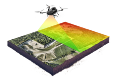
Structures cachées
PACUNAM LiDAR
Le LiDAR révèle cités, routes et champs sous la canopée. Des millions de personnes.
03 · La révolution scientifique
L'écologie historique : lire la forêt comme un texte
L'écologie historique montre que la forêt actuelle porte encore l'empreinte d'occupations humaines passées, précolombiennes et coloniales. Une étude de 2025 en croise les traces archéologiques avec la composition des arbres d'aujourd'hui.
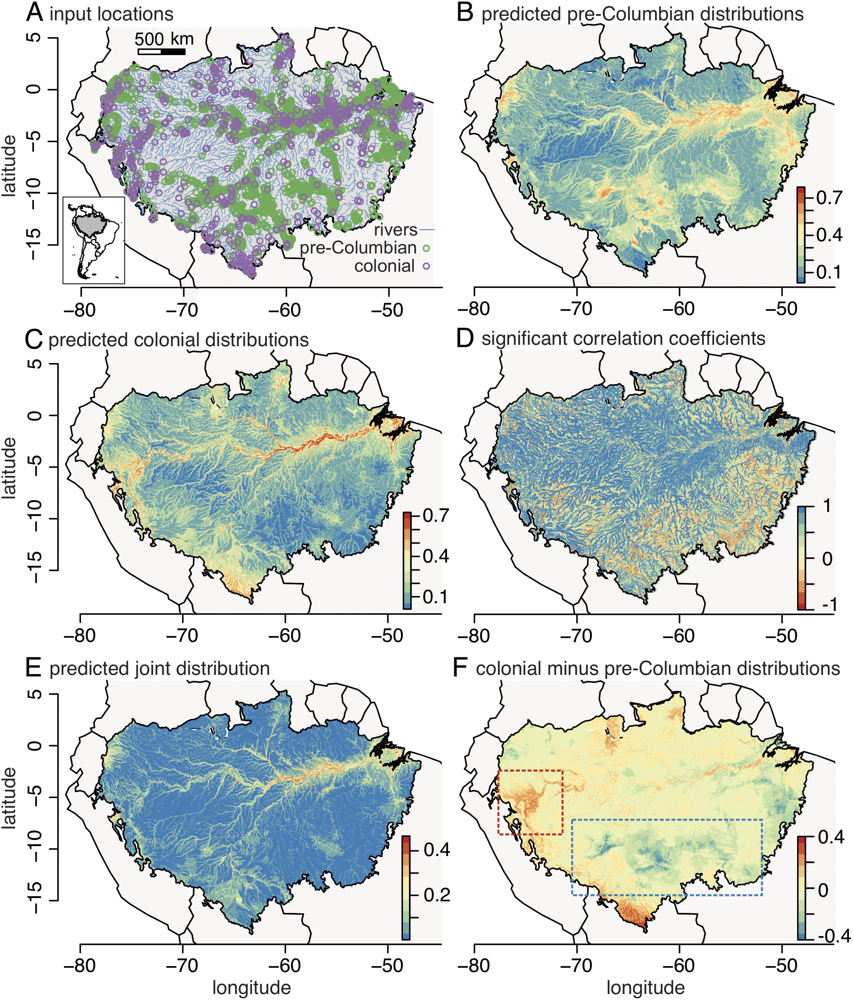
Fig. 1, McMichael et al., PNAS, 2025
McMichael et al. · PNAS · 2025
La question centrale
Dans quelle mesure les forêts amazoniennes « naturelles » d'aujourd'hui portent-elles encore la trace d'occupations humaines passées (précolombiennes (avant 1550) et coloniales (1600–1920, incluant le boom du caoutchouc) ?
Méthode
Deux cartes d'occupation, 262 espèces d'arbres
Modèles spatiaux à partir de +7 300 sites archéologiques précolombiens et d'environ 1 000 occurrences de collectes naturalistes coloniales (type GBIF)
Variables : distance aux rivières, sols, climat, altitude
Comparaison avec l'abondance de 262 espèces d'arbres « hyperdominantes » ou utiles, mesurée dans 1 521 parcelles du réseau ATDN
Résultat 1
L'eau structure l'empreinte humaine
La distance aux cours d'eau est le facteur le plus déterminant pour prédire la présence humaine passée, aux deux époques
Les distributions précolombiennes et coloniales sont significativement corrélées (centre et sud-ouest amazonien)
Divergences locales : influence coloniale plus forte autour d'Iquitos ; empreinte précolombienne plus marquée dans les zones de géoglyphes du sud
Résultat 2
Plus de la moitié des espèces « portent l'histoire »
Sur 262 espèces, plus de 50 % montrent une abondance corrélée à l'occupation humaine passée (précolombienne et/ou coloniale), certaines enrichies, d'autres appauvries
Les espèces utiles sont plus abondantes là où la probabilité d'occupation humaine est élevée
Contrairement à l'hypothèse de départ, l'influence coloniale n'a pas particulièrement favorisé les espèces pionnières / successionnelles précoces
Conclusion
Des « legs écologiques » cumulatifs
Les empreintes humaines ne se limitent pas à l'ère précolombienne : la période coloniale et le boom du caoutchouc (jusqu'à ~1920) ont eu un effet cumulatif et durable sur la composition actuelle des forêts. Beaucoup de parcelles considérées comme forêt primaire « mature » seraient encore en régénération après un abandon récent (< 175 ans), ce qui questionne les références utilisées pour estimer le carbone et la croissance forestière.
03 · La révolution scientifique
« L'Amazonie est un jardin géant façonné par 12 000 ans de travail humain »
Terra preta
+3 500
sites identifiés, sols anthropiques enrichis sur des siècles, répartis sur tout le bassin
Géoglyphes
+500
structures géométriques, formes parfaites jusqu'à 300 m, creusées à la main, visibles par satellite
Champs surélevés
> 100k
hectares aménagés, agriculture hydraulique intensive dans les plaines inondables
Domestication
85 %
des plantes utiles, manioc, maïs, cacao, hévéa, sélectionnés sur des millénaires
Population
8–10 M
habitants précolombiens, 10× les estimations de 1950, dont des cités de 10 000 à 100 000 hab.
03 · La révolution scientifique
Les géoglyphes de l'Acre : ingénierie précolombienne
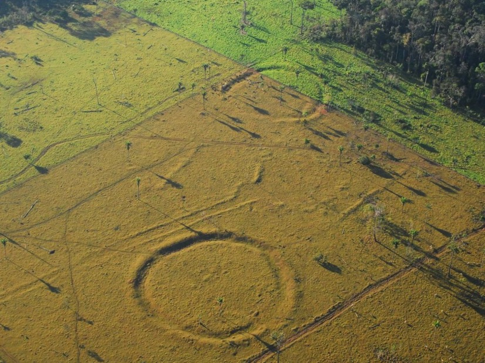
+500
géoglyphes découverts
300 m
diamètre max.
11 m
largeur des fossés
2 000
ans d'âge estimé
Révélés par la déforestation
Les géoglyphes de l'état d'Acre (Brésil) sont restés invisibles des siècles sous la canopée. C'est paradoxalement la déforestation qui les a révélés, et les images satellites qui les ont cartographiés.
Que sont-ils ?
Formes géométriques creusées dans le sol, réalisées uniquement à la force humaine. Usage cérémoniel, astronomique ou de rassemblement, témoins d'une planification collective à grande échelle.
03 · La révolution scientifique
Le LiDAR : voir sous la canopée
Le LiDAR (Light Detection and Ranging) envoie des impulsions laser depuis un avion ou un drone. En mesurant le temps de retour de chaque pulse, il reconstruit un modèle 3D du relief sous la végétation.
Pourquoi c'est une révolution
95 % de l'archéologie amazonienne reste invisible sous la canopée. Le LiDAR cartographie en quelques jours ce que des décennies de prospection au sol ne verraient pas.
Ce qu'il révèle
Routes surélevées, places, terrasses, fossés, champs, réseaux hydrauliques : l'empreinte d'urbanismes complexes, parfois sur des milliers de km².
2018
PACUNAM LiDAR (Maya)
2022
Casarabe (Bolivie)
+60 000
structures détectées au Guatemala
Modèle numérique de terrain : les structures apparaissent une fois la végétation « retirée »
Projet PACUNAM LiDAR, 2018 : la technique s'étend rapidement à l'Amazonie
03 · La révolution scientifique
La civilisation Casarabe, révélée par LIDAR (Bolivie, 2022)
Découverte par LIDAR (2022)
Heiko Prumers (DAI Berlin), Nature 2022 : 26 sites urbains reliés par routes surélevées et canaux, invisibles sous la canopée.
Cotoca, capitale probable
Deux pyramides tronquées (22 m), mur périmétrique, place centrale, routes végétalisées. Architecture planifiée, non nomade.
Ce que cela invalide
Le « vide amazonien » de Meggers (1971). La Casarabe, contemporaine de l'empire carolingien, démontre le contraire.
Fouilles en cours (2023–25)
Dépôts céramiques, hiérarchie urbaine à 3 niveaux. Les habitants sont probablement les ancêtres des Baure actuels.
03 · La révolution scientifique
Kuhikugu : une cité amazonienne de 50 000 habitants
En 2003, l'archéologue Michael Heckenbergerrévèle dans la revue Science un réseau de 20 villages interconnectés dans le bassin du Xingu (Brésil) une planification urbaine comparable aux villes médiévales européennes.
Organisation socialeréseau d'échanges, cérémonies collectives, transmission du savoir.
Continuité vivanteles Kuikuro vivent toujours dans le Xingu et collaborent avec les archéologues.
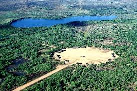
03 · La révolution scientifique
L'île de Marajó, mounds, céramique et société complexe
Les mounds (tesos)
+400 tertres construits à la main pour dépasser les crues. Certains atteignent 7 m de haut pour 250 m de long, organisation collective séculaire.
La céramique Marajóara
Betty Meggers niait son origine locale (Amazonie « trop pauvre »). Réfuté : ADN et stratigraphie confirment un développement autonome.
« Une des céramiques précolombiennes les plus élaborées d'Amérique, polychromie, figurines, urnes funéraires d'une société hiérarchisée sans écriture. »
D. Schaan, Univ. Fed. do Pará 2004
Inégalités documentables
Accès différencié aux objets de prestige, résidences variées, funérailles hiérarchisées, signature d'élites héréditaires.
Abandon et mémoire
Effondrement vers 1300 apr. J.-C. (migrations Tupi). Les Aruanã gardent une tradition orale liée aux tesos.
03 · La révolution scientifique
Les Llanos de Mojos, ingénierie hydraulique précolombienne
Les champs surélevés (camellones)
Plates-formes séparées par des canaux : irrigation en saison sèche, drainage en saison des pluies. Erickson : de quoi nourrir des millions.
Lacs artificiels et forêts-îles
Routes surélevées (causeways), lacs de pêche, îlots de palmiers plantés, un territoire intégralement anthropogène.
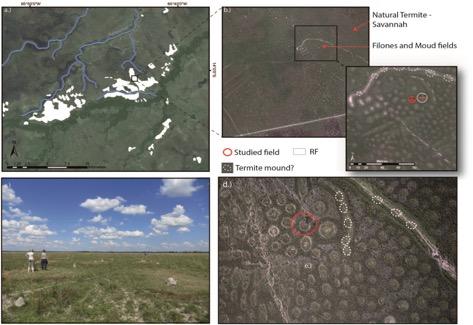
Abandon et réactivation
Abandonnés après la conquête et les épidémies. Réactivés partiellement par des communautés Beni au XXIᵉ s. face au climat.
Confirmation LIDAR (2018–22)
Villages sur tertres (lomas) reliés par causeways, hydraulique à l'échelle régionale. Comparable à la Casarabe en densité.
03 · La révolution scientifique
Gran Pajatén, la cité perdue de la montaña (Chachapoyas)
Site & culture Chachapoyas
Culture pré-inca (800–1470), « peuple des nuages ». ~30 édifices circulaires (7–12 m) à 2 850 m sur le rio Montecristo.
Architecture ornée unique
Frises sculptées : condors, serpents, figures humaines. Sans mortier, murs de 5–7 m. Centre cérémoniel et administratif.
« Une des découvertes archéologiques les plus importantes du Pérou, des édifices circulaires ornés de frises zoomorphes à 2 850 m d'altitude. »
Gene Savoy, exp. américaine, 1965
Les sarcophages de Karajía
Sarcophages anthropomorphes de 2,5 m plantés à pic dans les falaises. Corps en position fœtale, ancêtres-gardiens.
Intégration inca (1470)
Résistance puis soumission sous Túpac Yupanqui. Les Chachapoyas fournissent des gardes personnels au Sapa Inca à Cuzco.
03 · La révolution scientifique
Vidéo · Passeport pour Hier
Les civilisations d'Amazonie
En clôture du chapitre 3 : un regard documentaire sur les grandes sociétés précolombiennes de la forêt, complément aux sites et découvertes LIDAR présentés dans ce chapitre.
Les 4 éléments : deux visions opposées du même territoire
Gestion amérindienne (12 000 ans)
Exploitation occidentale (< 500 ans)
L'EAU
✓ Apprivoisée : canaux, champs surélevés, réservoirs, gestion des crues pour l'agriculture hydraulique
✗ Contrainte : barrages qui fragmentent les rivières, pollution au mercure, surexploitation pour l'irrigation
LA TERRE
✓ Enrichie : terra preta, biochar, polyculture, jachères tournantes maintenant la fertilité sur des siècles
✗ Dégradée : érosion massive par monocultures de soja, compaction par l'élevage, contamination par les mines
LE FEU
✓ Source de vie : brûlis contrôlés pour fertiliser les sols, chasser, régénérer la végétation utile
✗ Destructeur : incendies massifs pour défricher, 90 % d'origine humaine intentionnelle en 2020
L'AIR
✓ Géré : évapotranspiration entretenue par la couverture forestière, rivières volantes, puits de carbone
✗ Menacé : émissions de CO₂ par la déforestation, point de bascule vers la savane, dérèglement climatique
04 · Les 4 éléments de Rostain
Élément 1 · L'EAU
Apprivoisée pendant 12 000 ans
20 %
de l'eau douce liquide mondiale
219 000
m³/s, débit moyen du fleuve Amazone
× 5
le débit du fleuve Congo
75 %
de l'humidité recyclée par la forêt elle-même
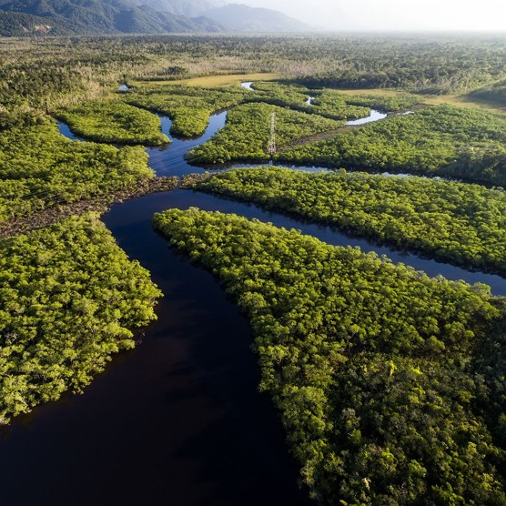
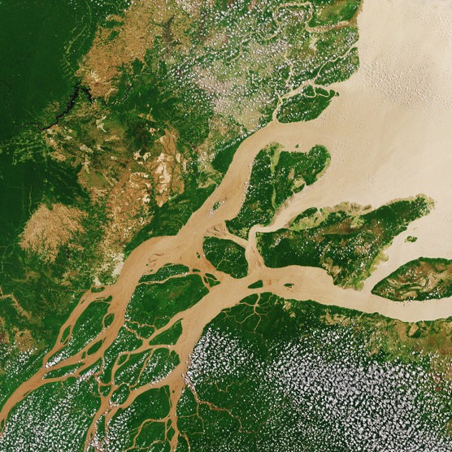
04 · L'EAU, apprivoisée
Ingénierie hydraulique précolombienne
Champs surélevés dans les plaines inondables (camellones), canaux de drainage, réservoirs d'eau.
En Bolivie (Llanos de Mojos), des centaines de milliers d'hectares ont été aménagés.
Cette gestion de l'eau a permis d'alimenter des millions de personnes dans un écosystème capricieux, alternant crues et sécheresses.
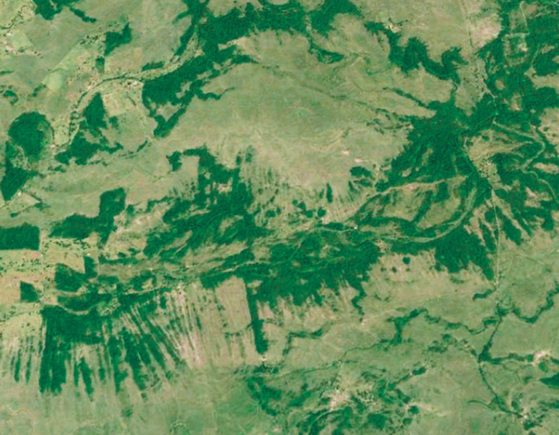
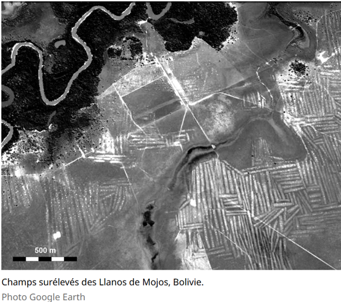
Champs surélevés des Llanos de Mojos, Bolivie. Photo Google Earth
04 · L'EAU, apprivoisée
Les rivières volantes : régulation continentale
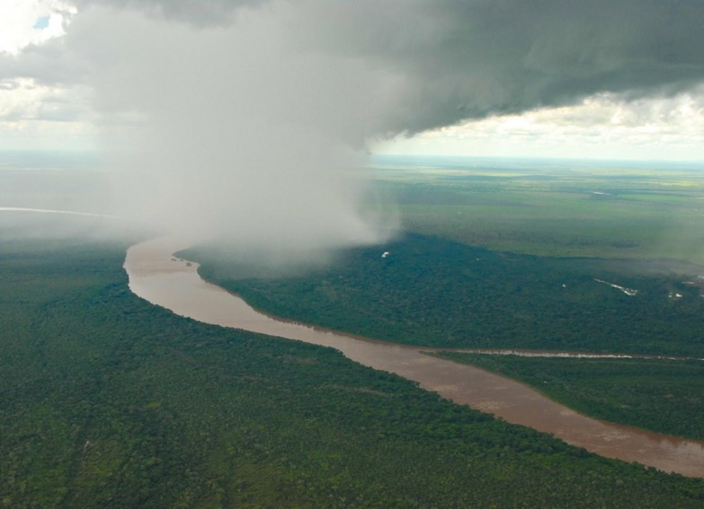
La forêt transpire chaque jour plus d'eau que le fleuve n'en déverse dans l'Atlantique.
Ces « rivières volantes » (fleuves atmosphériques) transportent l'humidité jusqu'à 3 000 km de distance et alimentent les pluies du Brésil central, de l'Argentine et du Paraguay.
Sans forêt amazonienne : sécheresses catastrophiques pour tout le continent.
04 · L'EAU, menacée
Menaces actuelles sur l'eau
La déforestation réduit l'évapotranspiration → les rivières volantes s'affaiblissent → sécheresses en cascade.
L'orpaillage illégal
déverse du mercure : 4-18× les seuils sanitaires dans les rivières.
412 barrages
projetés fragmentent les fleuves, bloquant les migrations de poissons essentielles aux communautés.
L'eau amazonienne est plus menacée que jamais.
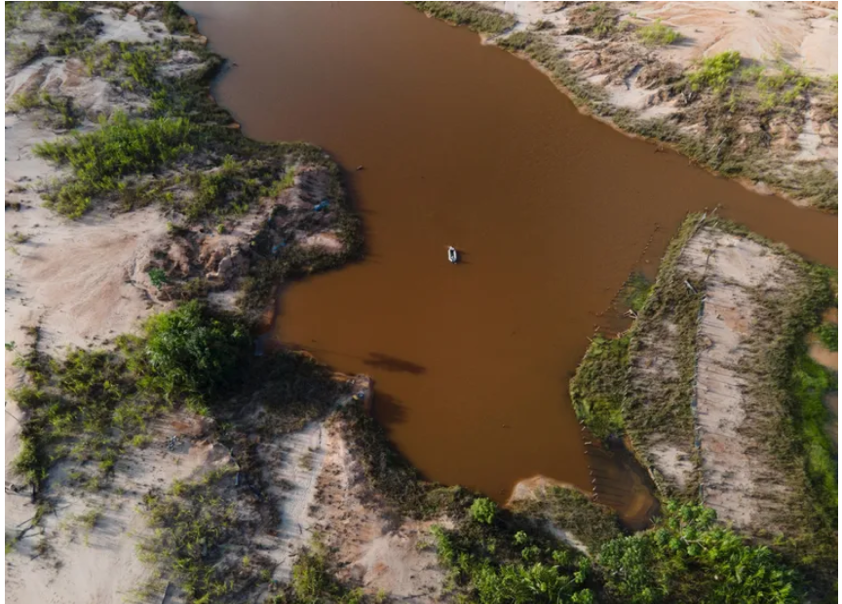
04 · Les 4 éléments de Rostain
Élément 2 · LA TERRE
Enrichie pendant des millénaires
Les sols tropicaux amazoniens sont naturellement pauvres (ferrallitiques, acides). Pourtant, les peuples précolombiens ont transformé des milliers de sites en terres fertiles. Ce que Meggers croyait impossible est documenté par des milliers de prélèvements.
HÉRITAGE · LA TERRA PRETA
+3 500 sites
de petits jardins familiaux aux plateformes de plusieurs km²
2 m de profondeur
des millénaires d'occupation et d'enrichissement continu
Fertilité persistante
fertiles des centaines d'années après l'abandon, utilisés encore aujourd'hui
Composition intentionnelle
biochar, os broyés, poteries, matière organique
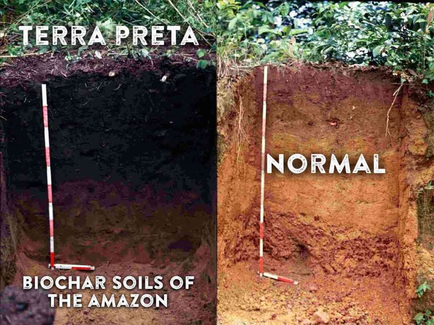
04 · LA TERRE, menacée
La destruction des sols
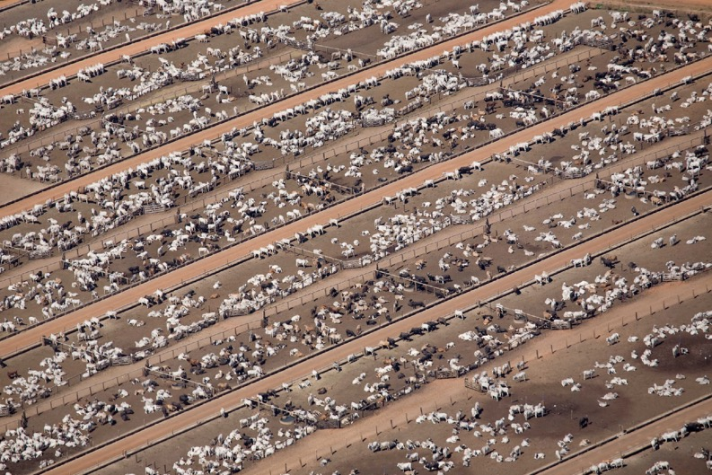
17 % détruits (+ 17 % dégradés)
Seuil critique estimé à 20-25 % : au-delà, basculement irréversible vers la savane (WWF 2022).
Élevage : 70 % de la déforestation
Soja et élevage bovin pour l'alimentation mondiale : le steak européen déforeste l'Amazonie.
Mining : contamination permanente
Mercure dans les rivières, destruction physique des sols sur des dizaines de milliers d'hectares.
04 · Les 4 éléments de Rostain
Élément 3 · LE FEU
Source de vie ou instrument de destruction
Le feu est au cœur de la relation entre les peuples amazoniens et leur territoire depuis des millénaires.
HÉRITAGE · LE BRÛLIS CONTRÔLÉ
Agriculture sur brûlis (swidden)
On brûle une parcelle de forêt secondaire pour libérer les nutriments. Après 2-3 ans, la parcelle est abandonnée et la forêt reprend.
Régénération intentionnelle
Les brûlis stimulent certaines espèces utiles et renouvellent les pâturages pour le gibier. Un outil de gestion écologique.
Brûlis et terra preta
Le charbon produit par les brûlis est l'ingrédient central de la terra preta, incorporé au sol, il augmente la fertilité sur le long terme.
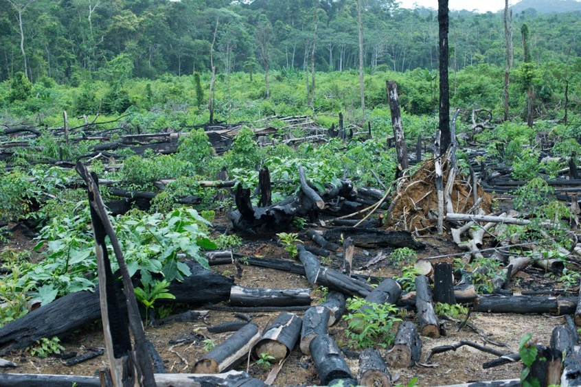
04 · LE FEU, menacé
Les incendies industriels
90 % d'origine humaine
Les incendies amazoniens ne sont pas naturels : ils sont allumés pour défricher au profit de l'élevage et de l'agriculture industrielle.
+2 500 grands incendies (2020)
Dont 88 % au Brésil. 2019 : +84 % de foyers d'incendie par rapport à la moyenne décennale.
436 000 ha en 2021
de forêt primaire perdus aux seuls incendies. Contrairement à la secondaire, elle ne se régénère pas à l'identique.
Cercle vicieux : feu + sécheresse
La déforestation assèche le climat, ce qui rend la forêt plus inflammable, ce qui accroît les incendies.
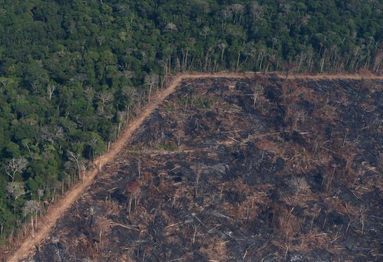
04 · LE FEU, menacé
Déforestation par le feu : un recul inquiétant
Allumés pour défricher, les feux accélèrent la perte de forêt primaire. En quarante ans, l'Amazonie brésilienne a perdu une superficie équivalente à l'Espagne ; au-delà d'un certain seuil, la forêt pourrait basculer vers la savane.
49,1 M ha en 40 ans
Superficie de végétation native perdue au Brésil, soit l'équivalent de l'Espagne (données satellitaires MapBiomas, 2025).
Point de non-retour ~2050
Si la perte de couverture s'accélère encore, le cycle des pluies pourrait se rompre et des zones forestières se transformer en savane.
2019 : pic d'incendies
Sous Bolsonaro, déboisement illégal et orpaillage explosent.
Le feu est l'outil principal pour convertir la forêt en pâturages et monocultures, avec des conséquences climatiques planétaires.
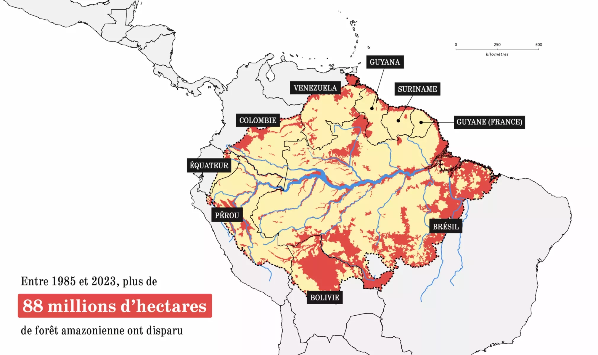
Front de déforestation : la forêt brûlée cède la place à l'élevage et à l'agriculture industrielle
04 · Les 4 éléments de Rostain
Élément 4 · L'AIR
Régulateur du climat planétaire
≈ 150 Gt
de carbone stockées dans la biomasse amazonienne
+0,3 °C
sur la température mondiale si tout était libéré
Puits de carbone mondial
La forêt fixe et stocke ce carbone dans le bois, les racines et les sols. Entièrement brûlée, ses émissions équivaudraient à plus de 10× les émissions mondiales annuelles.
L'air menacé : point de bascule
Des zones de l'est de l'Amazonie brésilienne émettent déjà plus de CO₂ qu'elles n'en absorbent. Trois sécheresses record (2005, 2010, 2015-2016) et des températures +1,2 °C : le signal d'alarme est mondial.
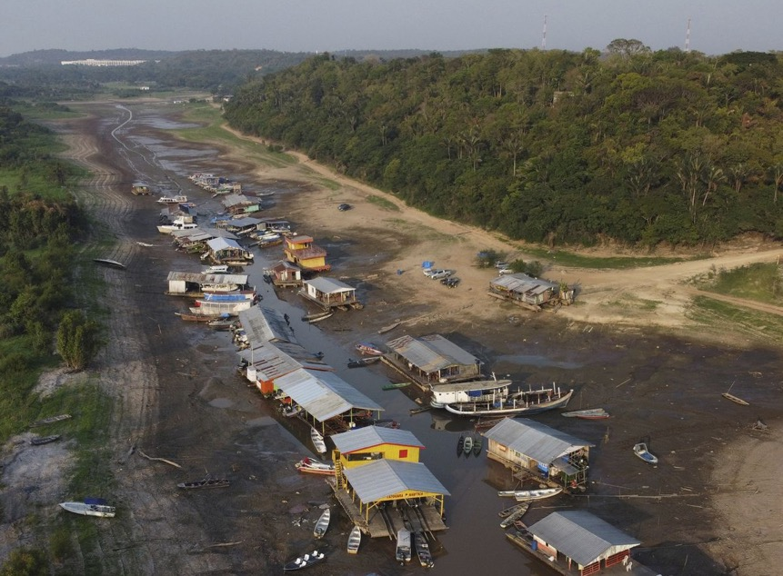
04 · LE FEU, menacé
Vidéo · RTS Info
La transformation de l'Amazonie en savane s'accélère
Complément visuel à la slide précédente : comment la déforestation et les incendies poussent la forêt vers un point de bascule, la savanisation de l'Amazonie.